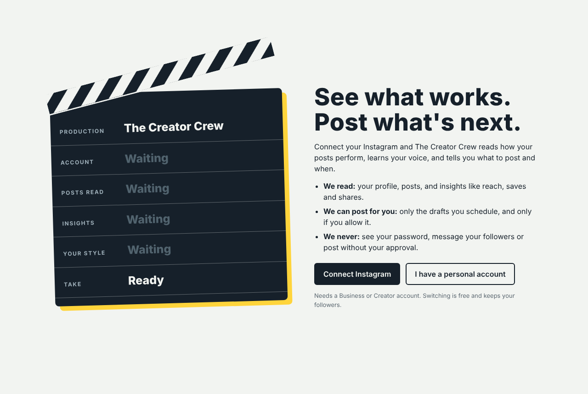
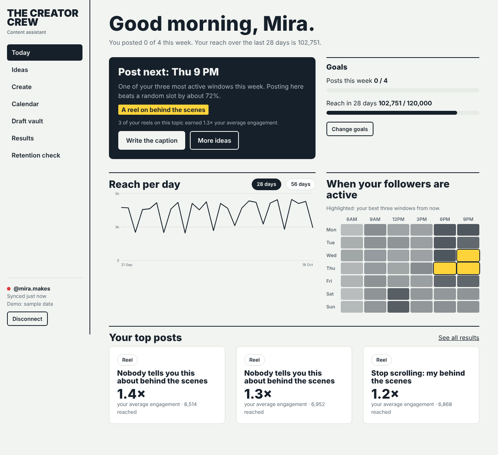
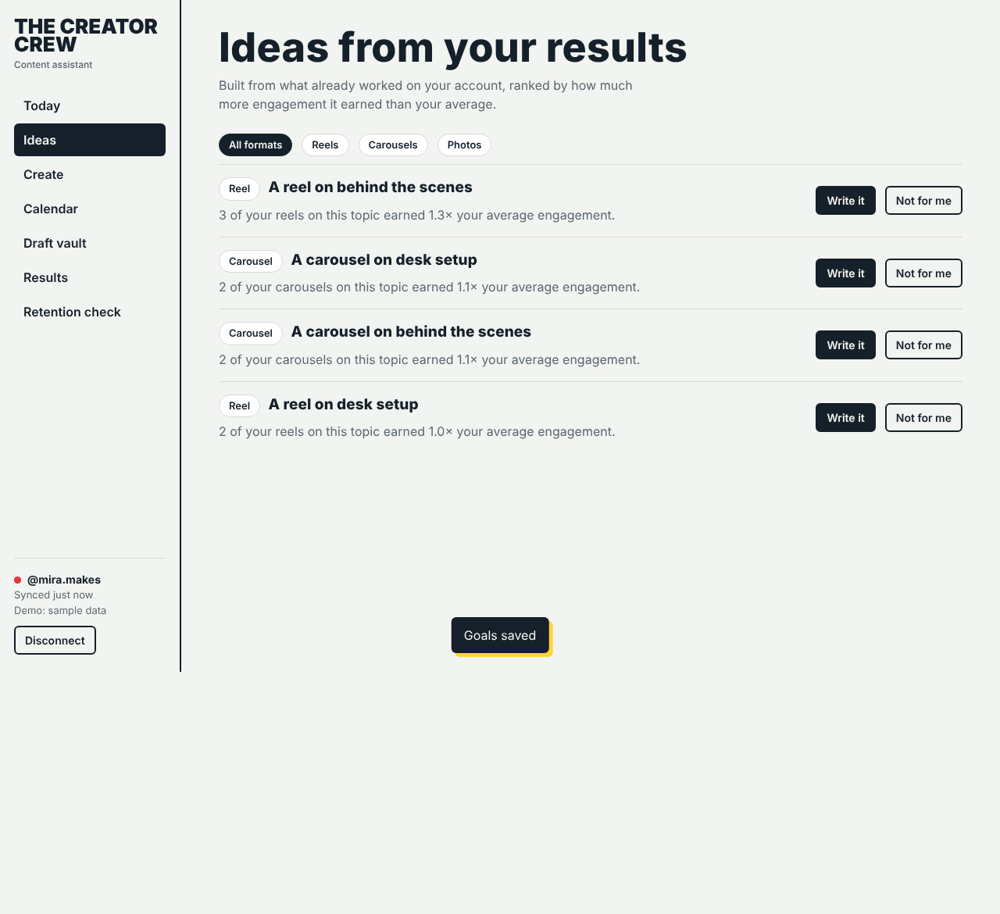
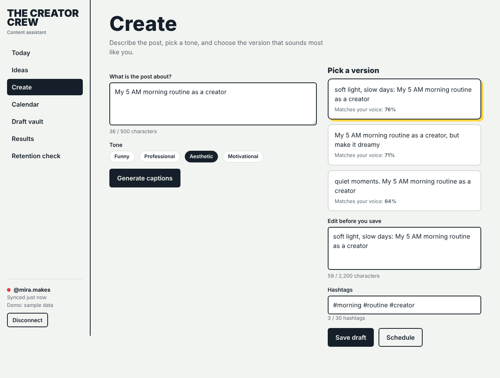
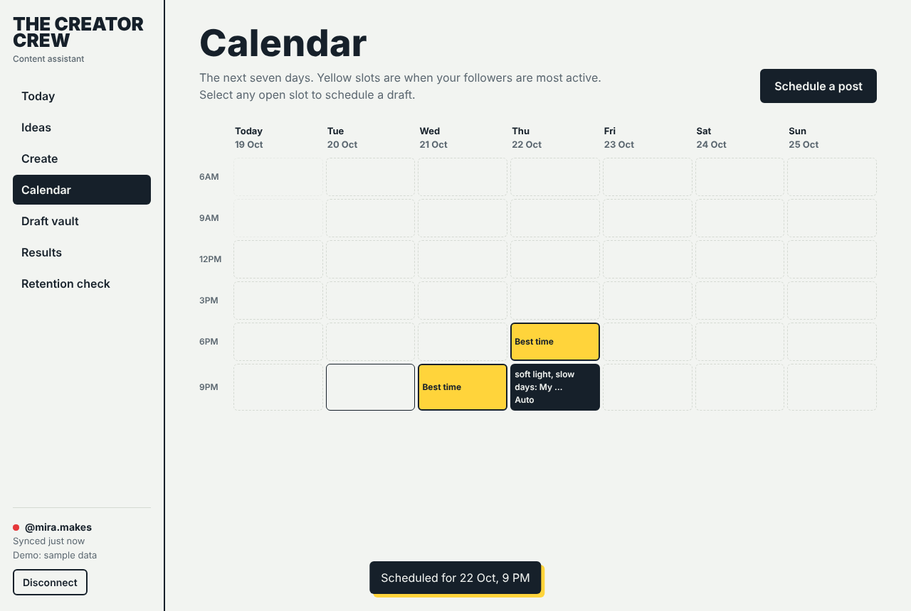
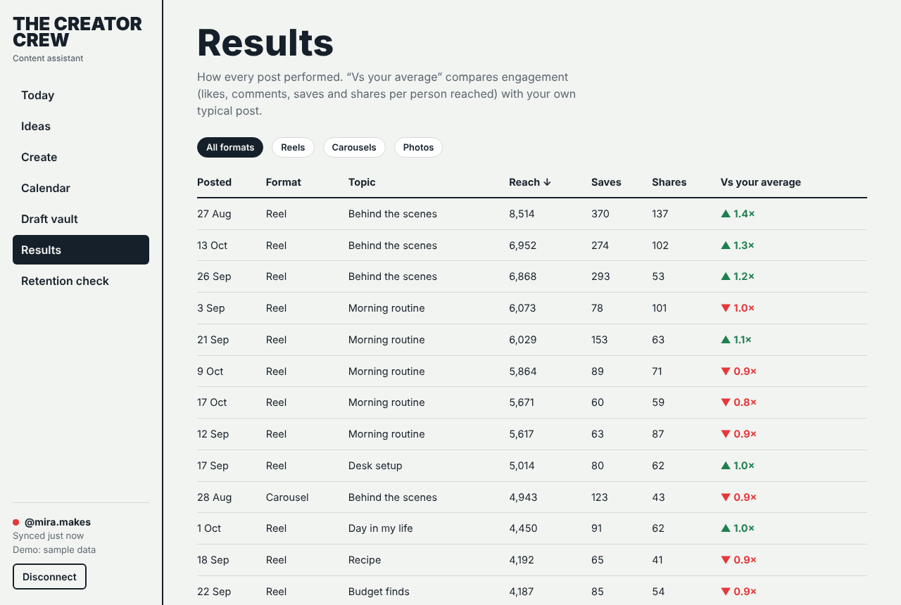
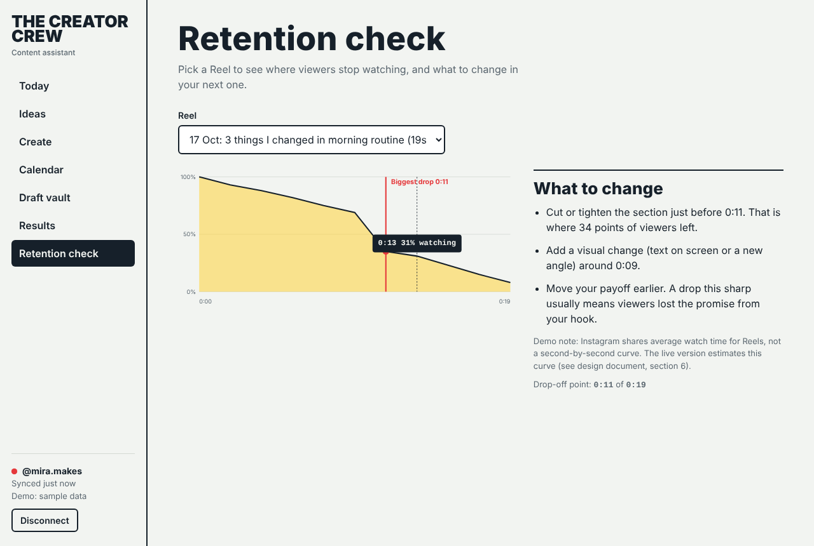

High-level design
The Creator Crew with Instagram connected: an assistant that reads how your posts perform, learns what works, and turns it into ideas, captions, posting times and progress tracking.
PBL III (CSE20140) mini-project · Companion to the clickable prototype in ui/index.html
1. Purpose and scope
Creators today juggle separate tools for writing captions, storing drafts, picking times and checking analytics. The Creator Crew puts them in one place and, once Instagram is connected, closes the loop: what you posted and how it did decides what the app suggests next.
In scope
- Connect one Instagram professional account (Business or Creator) by OAuth.
- Read profile, posts and insights; keep a history of metrics per post.
- Suggest ideas, captions in the creator's voice, and the best three posting windows.
- Schedule posts and publish them (or send a reminder).
- Track results against goals the creator sets.
Out of scope for this version
- TikTok and YouTube connectors (the connector layer is designed so they can be added).
- Reading or replying to comments and direct messages.
- Multi-account agency workspaces.
2. Users and main journeys
| Who | Goal |
|---|---|
| Creator (primary) | Know what to post and when, write captions fast in their own voice, and see whether it is working. |
| Team reviewer | Approve, send back or discard a shared draft before it is scheduled. |
- First run: connect Instagram, watch the sync finish, land on Today with real numbers.
- Weekly planning: open Today, see the next best slot and the top idea, write the caption, schedule it.
- After posting: check Results, see which posts beat the average, ask for more like them.
- Before posting a Reel: check retention on earlier Reels and fix the weak spot.
3. System context
The app talks to three outside parties: Instagram (data and publishing), an LLM provider (text generation) and, for shared accounts, a reviewer. A job scheduler triggers timed work such as syncs and scheduled publishing.
4. Architecture
| Component | Responsibility | Suggested technology |
|---|---|---|
| Clients | Mobile-first responsive app. Calls the API only; holds no Instagram tokens. | React or Flutter; the prototype is plain HTML/JS |
| API gateway + auth | Sign-in, MFA, rate limiting, input validation. | API Gateway + Cognito |
| Instagram Connector | OAuth, encrypted token storage and refresh, sync, publishing. The only component that calls Instagram. | Lambda functions, KMS-encrypted token table |
| Content Service | Builds prompts from tone, topic and the creator's style profile; returns three ranked captions with hashtags. | Lambda + LLM API |
| Style Memory | Learns length, emoji use, hook patterns from the creator's real captions; scores new text by "matches your voice". | Lambda + NLP features |
| Insights Analyzer | Computes per-post performance versus the creator's own average, topic and format patterns, best times, goal progress and ideas. | Scheduled Lambda jobs; DynamoDB queries |
| Draft Vault + Review | Drafts, version history, search, review states. | DynamoDB + S3 |
| Scheduler | Holds schedule entries and fires publish jobs. | EventBridge Scheduler + SQS |
The Connector is the single integration boundary. Everything else works on the app's own tables, so the rest of the product can be tested without Instagram, and other platforms can be added behind the same interface.
5. The optimisation loop
| Feature | What it uses from Instagram | What the creator gets |
|---|---|---|
| Ideas | Format, topic, saves, shares, comments, reach per post. | Ideas ranked by how much more engagement that topic and format earned than the creator's average, each with the reason. Example: "3 of your Reels on this topic earned 1.3× your average engagement." |
| Style Memory | The creator's published captions. | Three caption options ranked by "matches your voice". No more pasting past posts by hand. |
| Smart Scheduler | When followers are active (where Instagram provides it) plus the creator's own engagement by weekday and hour. | The best three windows in the next seven days, highlighted on the calendar. |
| Attention Optimizer | Reel watch-time metrics and duration. | The likely drop-off point and what to change. See section 6 for what Instagram does and does not provide. |
| Tracking | Reach and engagement history, post dates. | Goal progress (posts per week, reach in 28 days), reach per day, results table with each post against average. |
How "versus your average" is computed
Engagement for a post = (likes + 2 × comments + 3 × saves + 4 × shares) ÷ reach. Saves and shares are weighted higher because they signal that people found the post worth keeping or passing on. A post's score is its engagement divided by the creator's mean engagement, so 1.4× means 40% better than their typical post. The weights are a starting point to tune against real accounts.
6. Instagram integration
Account requirements
- Only Business or Creator accounts can use the API. Personal accounts must switch (free; followers are kept). The prototype's "I have a personal account" button explains how.
- While the Meta app is in development mode it works for accounts added as testers (for example, the team's own). Connecting other people's accounts needs Meta's app review for each permission.
Permissions requested
| Permission (Instagram API with Instagram Login) | Why | Required |
|---|---|---|
instagram_business_basic | Profile and media list | Yes |
instagram_business_manage_insights | Reach, saves, shares, watch time, audience activity | Yes |
instagram_business_content_publish | Publish scheduled posts | No. Without it the app sends a reminder instead. |
Comments and messages permissions are deliberately not requested. Asking for less keeps review simpler and matches the promise on the Connect screen.
Sync strategy
- First sync: backfill recent media (for example the last 12 months) and the insights available for each, in small batches that respect rate limits. The Connect screen shows progress.
- Ongoing: a scheduled job pulls new media daily. Metrics for a new post are re-read at about 1 hour, 24 hours and 7 days, because they keep changing. Webhooks can replace some polling where Meta offers them.
- Idempotent: every record is keyed by Instagram's media id plus capture time, so a retried job never duplicates data.
Publishing
Publishing is two calls: create a media container, then publish it. Instagram limits how many posts an account can publish through the API per day, and requires publicly reachable media; both are checked before a schedule entry is accepted. If publishing is not permitted or fails, the creator gets a reminder with the caption ready to copy.
Token lifecycle
- The authorisation code is exchanged server-side for a short-lived token, then for a long-lived token (about 60 days).
- Tokens are encrypted at rest, never sent to the client, and refreshed by a job before expiry.
- If a refresh fails or the creator revokes access in Instagram, the account moves to "expired", syncing pauses, and Today shows a clear "Reconnect Instagram" prompt.
What Instagram does not give us
- Estimate the drop-off from average watch time ÷ video length (for example, average watch of 6 s on a 19 s Reel means most viewers left in the first third).
- Analyse the video itself before posting (pace of cuts, when the hook payoff lands) and flag likely weak spots.
- Let the creator import the retention graph from Instagram's own insights screen (screenshot or manual entry) for Reels they care about.
Failure handling
| Situation | Behaviour |
|---|---|
| Instagram rate limit hit | Back off and resume; show "Syncing, this can take a few minutes". |
| Token expired or revoked | Pause jobs; prompt to reconnect; keep existing data. |
| Publish fails | Retry once; then send a reminder with the caption. Never publish twice. |
| Creator disconnects | Delete tokens, synced posts, metrics and learned style. Drafts stay. Confirm what is deleted before it happens. |
7. Data model
Metrics are stored as a time series (PostMetrics has one row per capture), so the app can show how a post grew over its first week and re-compute patterns when the weights change. Idea rows remember what was suggested, used or dismissed, so the same idea is not offered again.
Retention: synced Instagram data is kept while the account is connected and deleted on disconnect or account deletion. Drafts are the creator's own content and are kept until deleted.
8. UX design
Principles
- Start from the next decision. Today answers "what should I post next, and when?" before showing any chart.
- Every suggestion shows its reason. "Why this idea" always cites the creator's own results, so recommendations are checkable and not a black box.
- The creator stays in control. Nothing is published without a schedule the creator confirmed; every delete has an undo; disconnecting is one tap.
- Plain words. Labels say what happens ("Schedule post", "Disconnect"), errors say what to fix.
Screen inventory
| Screen | Job | Key interactions |
|---|---|---|
| Connect Instagram | Get consent and show the sync happening. | Permission dialog with optional publishing; personal-account help; the slate fills in as data is read. |
| Today | Decide what to post next; see progress. | Write the caption from the top idea; change goals; reach chart with 28 or 56 days and hover values; follower-activity heat map. |
| Ideas | Turn results into next posts. | Filter by format; Write it; Not for me with undo. |
| Create | Caption in the creator's voice. | Tone chips; three ranked versions with "matches your voice"; edit; character and hashtag limits; save draft; schedule. |
| Calendar | Place posts in the best slots. | Yellow best-time slots; select a slot to schedule; remove from schedule. |
| Draft vault | Find and reuse drafts. | Live search, edit, schedule, delete with undo. |
| Results | Learn what worked. | Sort and filter table; post detail; Make more like this jumps to Ideas. |
| Retention check | Fix where Reels lose viewers. | Pick a Reel; hover the curve for time and percentage; specific changes to try. |
Empty, error and loading states
- Empty: say what to do next ("Nothing scheduled yet. Pick a yellow slot to start.").
- Error: name the problem and the fix ("That's 12 characters over the 500 limit. Shorten the description.").
- Loading: the sync progress is shown on the slate; later syncs show "Synced just now".
Accessibility and responsiveness
- Works from phone width (bottom tab bar) to desktop (side rail); wide tables and the calendar scroll inside their own area.
- Visible keyboard focus, labelled controls, dialogs that trap focus, tables with sortable headers announced to screen readers.
- Colour is never the only signal (best slots also say "Best time"; drops are labelled and marked).
- Respects "reduce motion" and light/dark system settings.
Screens from the prototype







9. Security and privacy
- OAuth only: the app never sees the Instagram password.
- Tokens encrypted at rest (KMS), never exposed to the client or logs; all traffic over TLS 1.2 or higher.
- Least privilege: only the permissions in section 6; publishing is optional.
- Per-creator isolation: every query is scoped by creator id (the prototype's Draft Vault test checks that another creator sees nothing).
- Sign-in with MFA; account lock after repeated failures.
- Delete-my-data: disconnect removes tokens and synced data; Meta's data-deletion callback is implemented for the app.
- Follow Meta's Platform Terms: do not store data longer than needed, do not use it for anything other than showing it to its owner and improving their suggestions.
- LLM prompts contain the creator's own captions and topics only, no tokens or personal identifiers.
10. Quality targets
| Target | Value | From |
|---|---|---|
| Caption generation time | Under 3 seconds | SRS (Assignment 2) |
| Draft retrieval | Under 2 seconds | SRS |
| Availability | 99% monthly, alert after 5 minutes down | SRS |
| First sync | Under 2 minutes for 12 months of media (target to validate against rate limits) | New |
| Publish accuracy | Within 1 minute of scheduled time, never twice | New |
| Style Memory | Needs at least 10 real captions (Lab 6); 20 in the original SRS wording, to reconcile | Assignments 2, 6 |
11. Build plan
| Phase | Delivers | Depends on |
|---|---|---|
| 1. Core without Instagram | Auth, Create, Draft vault, review, calendar with manual reminders (this is the earlier Flask prototype). | None |
| 2. Read-only connection | Connect, first sync, Results, Today, Ideas, Style Memory from real captions. | Meta developer app, test accounts |
| 3. Publishing | Auto-publish from the scheduler, reminder fallback. | Publish permission and review |
| 4. Retention and tuning | Estimated retention, tuned engagement weights, goal alerts. | Enough real data |
Phase 1 and the UI already exist in this project. Phases 2 to 4 replace the sample data behind the same screens.
12. Risks and open questions
| Risk or question | Plan |
|---|---|
| Meta app review is slow or rejected | Request the minimum permissions; record a screencast of the real flow; keep a "read-only and reminders" mode that needs no publish permission. |
| API limits or fields change | Keep all Instagram calls inside the Connector; contract-test it against recorded responses. |
| Suggestions feel generic with little history | Show how many posts the advice is based on; say "not enough data yet" instead of guessing. |
| Engagement weights are arbitrary | Treat the 1/2/3/4 weights as a default; let real accounts show whether saves and shares predict growth. |
| Open: personal accounts | Could offer manual entry of results, but it will be weaker. Decide after a user test. |
| Open: one account or many | One for now. Multi-account needs a workspace model. |
13. Traceability to earlier assignments
| Earlier work | How this design builds on it |
|---|---|
| Assignment 1: Agile (Scrum) | The build plan is incremental, one working slice at a time. |
| Assignment 2: SRS | Quality targets in section 10; five feature pillars map to the five services. |
| Assignment 3: DFDs | Social platforms and AI/NLP services are the external entities in Figure 1; the data stores match section 7. |
| Assignment 4: use case and sequence | Figures 4 and 5 extend the generate, save, schedule and learn sequence with the Instagram connection. |
| Assignment 5: class and activity | Creator, Draft, StyleProfile, ScheduledPost and EngagementData appear as Creator, Draft, StyleProfile, Schedule and PostMetrics. |
| Assignment 6: planning | Phase 1 (core) is already built; phases 2 to 4 add Instagram features and would raise the size estimate. |
| Assignments 7 and 8: testing and write-up | The Flask prototype's 22 white-box and 42 Selenium tests cover phase 1. New Connector code would need contract tests against recorded Instagram responses. |